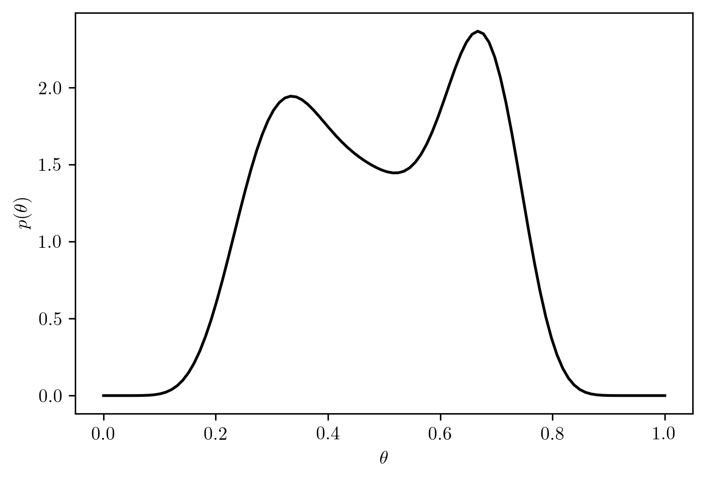

%matplotlib inline
import sys # system information
import matplotlib # plotting
import scipy # scientific computing
import random
import pandas as pd # data managing
from scipy.special import comb
from scipy import stats as st
from scipy.special import gamma
import numpy as np
import matplotlib.pyplot as plt
# Matplotlib setting
plt.rcParams['text.usetex'] = True
matplotlib.rcParams['figure.dpi']= 3007 Homework 3
7.1 Description
- Course: STAT638, 2022 Fall
Do the following exercises in Hoff: 3.8, 3.9, 3.14.
In Exercise 3.9, you should be able to avoid “brute-force” integration by exploiting the fact that the Galenshore distribution is a proper distribution, meaning that the density of the Galenshore(a,b) distribution integrates to one for any \(a,b>0\).
For 3.14(b), note that \(p_U(\theta)\) is proportional to the density of a known distribution.
Please note that while there are only 3 problems in this assignment, some of them are fairly challenging. So please don’t wait too long to get started on this assignment.
- Deadline:
Sept. 27, 12:01pm
7.2 Computational Enviromnent Setup
7.2.1 Third-party libraries
7.2.2 Version
print(sys.version)
print(matplotlib.__version__)
print(scipy.__version__)
print(np.__version__)
print(pd.__version__)3.8.12 (default, Oct 22 2021, 18:39:35)
[Clang 13.0.0 (clang-1300.0.29.3)]
3.3.1
1.5.2
1.19.1
1.1.17.3 Problem 3.8
Coins: Diaconis and Ylvisaker (1985) suggest that coins spun on a flat surface display long-run frequencies of heads that vary from coin to coin. About \(20\%\) of the coins behave symmetrically, whereas the remaining coins tend to give frequencies of \(\frac{1}{3}\) or \(\frac{2}{3}\).
Let \(\theta\) be the priobability of tossing head.1
7.3.1 (a)
Based on the observations of Diaconis and Ylvisaker (1985), use an appropriate mixture of beta distributions as a prior distribution for \(\theta\), the long-run frequency of heads for a particular coin. Plot your prior.
Let the prior probability \(p_i(\theta)\) be a mixture of \(Beta(a_i,b_i)\) with \(i=[1,2,3]\), and coeifficient \(k = [k_1, k_2, k_3]\) with \(\sum_{i=1}^{3} k_j = 1\).
Let the prior probabiility be
\[\begin{align} p(\theta) &= \sum_{i=1}^{3} k_i p_i(\theta)\\ &= k_1 p_1(\theta) + k_2 p_2(\theta) + k_3 p_3(\theta)\\ &= 0.2 \times Beta(\theta, a_1, b_1) + 0.4 \times Beta(\theta, a_2, b_2) + 0.4 \times Beta(\theta, a_3, b_3)\\ &= 0.2 \times Beta(\theta, 3, 3) + 0.4 \times Beta(\theta,2, 4) + 0.4 \times Beta(\theta,4, 2) \end{align}\]
The distribution is shown in Figure 7.1.

7.3.2 (b)
Choose a single coin and spin it at least \(50\) times. Record the number of heads obtained. Report the year and denomination of the coin.
Let \(n>50\) be the number of flips, and \(x\) be the number of heads obtained.
# A single psudo coin with unknown probability of flipping head
class PseudoCoin:
def __init__(self, random_state=202209):
np.random.seed(random_state)
self.random_state = random_state
self.ph = np.random.rand()
self.rv = st.bernoulli(self.ph)
def flips(self, n):
return self.rv.rvs(n, random_state=self.random_state)
# parameters setting
n = 100 # number of flips
coin = PseudoCoin()
# Experiment
rs = coin.flips(n)
# Results
print(rs)[0 0 0 0 0 0 0 0 0 1 0 0 0 0 0 0 0 0 0 0 0 0 0 0 0 0 0 0 0 0 0 0 0 0 0 0 0
0 1 0 0 0 1 0 0 0 1 0 0 0 0 0 0 0 1 0 0 0 0 0 0 1 0 0 0 0 1 0 0 0 0 0 0 0
1 0 0 0 1 0 0 0 0 0 0 0 0 1 0 0 0 0 0 0 1 1 0 0 0 0]| Properties | Values | |
|---|---|---|
| 0 | N | 100 |
| 1 | Number of heads (y=1) | 12 |
| 2 | Number of tails | 88 |
7.3.3 (c)
Compute your posterior for \(\theta\), based on the information obtained in (b)
For \(i = \{1,2,3\}\), the posterior probability of single distribution is
\[\begin{align} p_{i}(\theta|y) &= \frac{p_{i}(\theta)p(y|\theta)}{\underbrace{\int_{\theta\in [0,1]}p_i(\theta)p(y|\theta) d\theta}_{=C_j}}\\ &= \frac{Beta(\theta, a_i, b_i) {n\choose y}\theta^{y}(1-\theta)^{n-y}}{\underbrace{\int_{0}^{1}Beta(\theta, a_i, b_i){n\choose y}\theta^{y}(1-\theta)^{n-y} d\theta}_{=C_j}} \\ &= \frac{\frac{\Gamma(a_i +b_i)}{\Gamma(a_i)\Gamma(b_i)} {n\choose y}\theta^{y}(1-\theta)^{n-y}}{\int_{0}^{1}\frac{\Gamma(a_i +b_i)}{\Gamma(a_i)\Gamma(b_i)}{n\choose y}\theta^{y}(1-\theta)^{n-y} d\theta}\\ &= \frac{\frac{\Gamma(a_i +b_i)}{\Gamma(a_i)\Gamma(b_i)}\theta^{(a_i-1)}(1-\theta)^{b_i - 1}{n\choose y}\theta^{y}(1-\theta)^{n-y}}{\int_{0}^{1}\frac{\Gamma(a_i +b_i)}{\Gamma(a_i)\Gamma(b_i)}\theta^{(a_i-1)}(1-\theta)^{b_i - 1}{n\choose y}\theta^{y}(1-\theta)^{n-y} d\theta}\\ &= Beta(\theta, a_i + y, b_i + n - y) \end{align}\]
The posterior distribution of individual prior is
\[\begin{align} p_{1}(\theta|y) &= Beta(\theta, a_1 + y, b_1 + n - y)\\ &= Beta(\theta, 3+12,3+100-12) = Beta(\theta, 15,91)\\ p_{2}(\theta|y) &= Beta(\theta, a_2 + y, b_2 + n - y)\\ &= Beta(\theta, 2 + 12, 4 + 100 - 12)= Beta(\theta, 14, 92)\\ p_{3}(\theta|y) &= Beta(\theta, a_3 + y, b_3 + n - y)\\ &= Beta(\theta, 4 + 12, 2 + 100 - 12)=Beta(\theta, 16, 90)\\ \end{align}\]
\[\begin{align} C_j &= \int_{0}^{1} \frac{\Gamma(a_i +b_i)}{\Gamma(a_i)\Gamma(b_i)}\theta^{(a_i-1)}(1-\theta)^{b_i - 1}{n\choose y}\theta^{y}(1-\theta)^{n-y} d\theta\\ &= \int_{0}^{1} \frac{\Gamma(a_i +b_i)}{\Gamma(a_i)\Gamma(b_i)}\frac{\Gamma(n)}{\Gamma(y)\Gamma(n-y)}\theta^{(a_i-1)}(1-\theta)^{b_i - 1}\theta^{y}(1-\theta)^{n-y} d\theta\\ &= \frac{\Gamma(a_i +b_i)}{\Gamma(a_i)\Gamma(b_i)}\frac{\Gamma(n)}{\Gamma(y)\Gamma(n-y)} \int_{0}^{1} \theta^{(a_i-1)}(1-\theta)^{b_i - 1}\theta^{y}(1-\theta)^{n-y} d\theta\\ &= \frac{\Gamma(a_i +b_i)}{\Gamma(a_i)\Gamma(b_i)}\frac{\Gamma(n)}{\Gamma(y)\Gamma(n-y)} \int^{1}_{0} \theta^{a_i +y - 1}(1-\theta)^{b_i + n - y -1} d\theta\\ &= \frac{\Gamma(a_i +b_i)}{\Gamma(a_i)\Gamma(b_i)}\frac{\Gamma(n)}{\Gamma(y)\Gamma(n-y)} \frac{\Gamma(a_i + y)\Gamma(b_i +n -y)}{\Gamma(a_i + b_i + n)} \end{align}\]
\[\begin{align} C_1 &= \frac{\Gamma(3+3)}{\Gamma(3)\Gamma(3)}\frac{\Gamma(100)}{\Gamma(12)\Gamma(88)}\frac{\Gamma(3+12)\Gamma(3+100-12)}{\Gamma(3+3+100)}\\ &= \frac{\Gamma(6)}{\Gamma(3)\Gamma(3)}\frac{\Gamma(100)}{\Gamma(12)\Gamma(88)}\frac{\Gamma(15)\Gamma(91)}{\Gamma(106)}\\ C_2 &= \frac{\Gamma(2 + 4)}{\Gamma(2)\Gamma(4)}\frac{\Gamma(100)}{\Gamma(12)\Gamma(88)} \frac{\Gamma(2 + 12)\Gamma(4 + 100 - 12)}{\Gamma(2 + 4 + 100)}\\ &= \frac{\Gamma(6)}{\Gamma(2)\Gamma(4)}\frac{\Gamma(100)}{\Gamma(12)\Gamma(88)} \frac{\Gamma(14)\Gamma(92)}{\Gamma(106)}\\ C_3 &= \frac{\Gamma(4 + 2)}{\Gamma(4)\Gamma(2)}\frac{\Gamma(100)}{\Gamma(12)\Gamma(100-12)} \frac{\Gamma(4 + 12)\Gamma(2 + 100 - 12)}{\Gamma(4 + 2 + 100)}\\ &= \frac{\Gamma(6)}{\Gamma(4)\Gamma(2)}\frac{\Gamma(100)}{\Gamma(12)\Gamma(88)} \frac{\Gamma(16)\Gamma(90)}{\Gamma(106)} \end{align}\]
Let
\[C^{*}_i = \frac{\Gamma(a_i +y)\Gamma(b_i + n - y)}{\Gamma(a_i)\Gamma(b_i)} \tag{7.1}\]
\[\begin{align} k_{j}^{(1)} &= \frac{k_{j}^{(0)} C_j}{\sum_{i=1}^{J} k_{i}^{(0)} C_i}\\ &= \frac{k_{j}^{0} C_{j}^{*}}{0.2\times \underbrace{\frac{\Gamma(15)\Gamma(61)}{\Gamma(3)\Gamma(3)}}_{C^{*}_{1}} + 0.4 \times \underbrace{\frac{\Gamma(14)\Gamma(92)}{\Gamma(2)\Gamma(4)}}_{C^{*}_{2}} + 0.4 \times \underbrace{\frac{\Gamma(16)\Gamma(90)}{\Gamma(4)\Gamma(2)}}_{C^{*}_{3}}} \end{align}\]
where \(j\in \{1,2,3\}\).
def gammafrac(a,b,c,d,):
return ((gamma(a)*gamma(b))**-1) * gamma(c) * gamma(d)
c1 = gammafrac(3,3,15,61)
c2 = gammafrac(2,4,14,92)
c3 = gammafrac(4,2,16,90)
C = c1 + c2 + c3
pd.DataFrame({"Variables": ["C1*", "C2*", "C3*", "$k^{1}_{1}$", "$k^{1}_{2}$", "$k^{1}_{3}$"], "Values": [c1,c2,c3, c1/C, c2/C, c3/C]})| Variables | Values | |
|---|---|---|
| 0 | C1* | 1.813524e+92 |
| 1 | C2* | 1.403157e+149 |
| 2 | C3* | 3.597838e+147 |
| 3 | $k^{1}_{1}$ | 1.260148e-57 |
| 4 | $k^{1}_{2}$ | 9.750000e-01 |
| 5 | $k^{1}_{3}$ | 2.500000e-02 |
\[\begin{align} p(\theta|y) &= \sum_{i=1}^{3} k_{i}^{(1)}p_{i}(\theta|y)\\ &= k_{1}^{(1)}p_{1}(\theta|y) + k_{2}^{(1)}p_{2}(\theta|y) + k_{3}^{(1)}p_{3}(\theta|y)\\ &= 1.260148\times 10^{-57} \times Beta(\theta, 15,91) \\ &+ 9.750000\times 10^{-01} \times Beta(\theta, 14, 92) \\ &+ 2.500000e\times 10^{-02} \times Beta(\theta, 16, 90) \end{align}\]
7.3.4 (d)
Repeat (b) and (c) for a different coin, but possibly using a prior for \(\theta\) that includes some information from the first coin. Your choice of a new prior may be informal, but needs to be justified. How the results from the first experiment influence your prior for the \(\theta\) of the second coin may depend on whether or not the two coins have the same denomination, have a similar year, etc. Report the year and denomination of this coin.
# pick another coin
coin2 = PseudoCoin(random_state=202210)
# parameters setting
n2 = 100 # number of flips
# Experiment
rs2 = coin2.flips(n2)
# Results
print(rs2)[1 1 0 1 1 0 0 1 1 1 0 1 1 0 1 0 0 1 1 1 1 1 1 1 0 0 0 0 1 0 0 1 1 0 1 0 0
1 1 0 0 0 1 1 0 1 1 0 0 0 0 1 0 0 0 1 0 0 0 1 0 0 1 1 1 0 0 0 1 1 1 0 1 0
1 0 1 1 0 0 1 0 0 1 0 0 1 1 1 1 1 0 1 0 0 1 1 0 0 1]| Properties | Values | |
|---|---|---|
| 0 | N | 100 |
| 1 | Number of heads (y=1) | 51 |
| 2 | Number of tails | 49 |
\[\begin{align} p^{1}(\theta) &= 1.260148\times 10^{-57} \times Beta(\theta, 15,91) \\ &+ 9.750000\times 10^{-01} \times Beta(\theta, 14, 92) \\ &+ 2.500000e\times 10^{-02} \times Beta(\theta, 16, 90) \end{align}\]
Apply Equation 7.1,
\[\begin{align} C^{*}_{1} &= \frac{\Gamma(15 + 51)\Gamma(91 + 100 - 51)}{\Gamma(15)\Gamma(91)}\\ &= \frac{\Gamma(66)\Gamma(140)}{\Gamma(15)\Gamma(91)}\\ C^{*}_{2} &= \frac{\Gamma(14 + 51)\Gamma(92 + 100 - 51)}{\Gamma(14)\Gamma(92)}\\ &= \frac{\Gamma(65)\Gamma(141)}{\Gamma(14)\Gamma(92)}\\ C^{*}_{3} &= \frac{\Gamma(16 + 51)\Gamma(90 + 100 - 51)}{\Gamma(16)\Gamma(90)}\\ &= \frac{\Gamma(67)\Gamma(139)}{\Gamma(16)\Gamma(90)}\\ \end{align}\]
| Variables | Values | |
|---|---|---|
| 0 | C1* | 6.123054e+180 |
| 1 | C2* | 2.028941e+180 |
| 2 | C3* | 1.744410e+181 |
| 3 | $k^{1}_{1}$ | 2.392183e-01 |
| 4 | $k^{1}_{2}$ | 7.926761e-02 |
| 5 | $k^{1}_{3}$ | 6.815141e-01 |
\[\begin{align} p^{2}(\theta|y_2) &= \sum_{i=1}^{3} k_{i}^{(2)} p^{(2)}_{i}(\theta|y_2)\\ &= k_{1}^{(2)} p^{(2)}_{1}(\theta|y_2) + k_{2}^{(2)} p^{(2)}_{2}(\theta|y_2) + k_{3}^{(2)} p^{(2)}_{3}(\theta|y_2)\\ &=k_{1}^{(2)} Beta(15+51, 91+49)\\ &+ k_{2}^{(2)} Beta(14+51,92+49)\\ &+ k_{3}^{(2)} Beta(16+51, 90 + 49)\\ &= 2.32\times 10^{-1} \times Beta(66,140)\\ &+ 7.93\times 10^{-2} \times Beta(65,141)\\ &+ 6.82\times 10^{-1} \times Beta(67,139)\\ \end{align}\]
7.4 Problem 3.9
Galenshore distribution: An unknown quantity \(Y\) has a Galenshore(\(\alpha\), \(\theta\)) distribution if its density is given by
\[p(y) = \frac{2}{\Gamma(a)}\theta^{2a}y^{2a-1}e^{-\theta^2 y^2}\] for \(y>0\), \(\theta>0\) and \(a>0\). Assume for now that \(a\) is known. For this density, \[E[Y]=\frac{\Gamma(a+\frac{1}{2})}{\theta\Gamma(a)}, \quad E[Y^2]=\frac{a}{\theta^2}\]
7.4.1 (a)
Identify a class of conjugate prior densities for \(\theta\). Plot a few members of this class of densities.
Identifying Galenshore distribution belongs to exponential family
\[\begin{align} p(y|\theta) &= \frac{2}{\Gamma(a)}y^{2a-1}\theta^{2a}e^{-\theta^2 y^2}\\ &= \left(\frac{2}{\Gamma(a)}y^{2a-1}\right) \left(\theta^{2}\right)^a\left(e^{-\theta^2 y^2}\right)\\ \end{align}\]
- \(\phi(\theta) = \theta^2\)
- \(h(y) = \frac{2}{\Gamma(a)}y^{2a-1}\)
- \(c(\phi) = \phi^a\)
- \(t(y) = -y^2\)
\[p(y|\phi) = \underbrace{(\frac{2}{\Gamma(a)}y^{2a-1})}_{=h(y)}\underbrace{(\phi^a)}_{=c(\phi)} \exp(\phi\cdot\underbrace{(-1)\cdot y^2}_{=t(y)})\]
Derive the posterior distribution
\[\begin{align} p(\phi|n_0, t_0) &= \kappa(n_0, t_0)c(\phi)^{n_0}\exp(n_0 t_0 \phi)\\ &= \kappa(n_0, t_0)\phi^{a n_0}\exp(n_0 t_0 \phi)\\ p(\theta^2|n_0, t_0) &= \kappa(n_0, t_0)\theta^{2 a n_0}e^{(n_0 t_0 \theta^2)}\\ \end{align}\]
Apply change of variables
Let \(f(\phi) = \sqrt{\theta} = \theta\) (\(f\) is a monotonous function), and \(\phi(\theta) = \theta^2\)
\[\begin{align} p_{\phi}(\phi) &= p_{\theta}(f(\phi)) \times |\frac{df}{d\phi}|\\ \kappa(n_0, t_0)c(\phi)^{n_0}\exp(n_0 t_0 \phi) &= p_{\theta}(\theta) \times (\frac{1}{2\sqrt{\theta}})\\ \kappa(n_0, t_0)c(\theta^2)^{n_0}\exp(n_0 t_0 \theta^2) &= p_{\theta}(\theta) \times (\frac{1}{2\sqrt{\theta}})\\ p_{\theta}(\theta) &= \kappa(n_0,t_0)\theta^{2a}e^{(n_0 t_0 \theta^2)} \end{align}\]
\[\begin{align} p_{\theta}(\theta) &= p_{\phi}(\phi(\theta)) \times |\frac{d\phi(\theta)}{d\theta}|\\ &\propto \kappa(n_0, t_0)c(\theta^2)^{n_0}\exp(n_0 t_0 \theta^2) \times 2\theta\\ &\propto \theta^{2a n_0 + 1}e^{(n_0 t_0 \theta^2)}\\ \end{align}\]
To avoid alias, let Galenshore pdf function be
\[p_{X\sim Galenshore}(x;a,z) = \frac{2}{\Gamma(a)}z^{2a}x^{2a-1}e^{-z^2x^2} \tag{7.2}\]
Combining Equation 7.2 together,
\[\begin{align} p_{\theta}(\theta | n_0, t_0) &\propto dGalenshore(\theta; an_0 +1, \sqrt{-n_0t_0})\\ \end{align}\]
\(\because t_0=-y^2\) \(\therefore -n_0t_0=n_0y^2\geq 0\).
7.4.2 (b)
Let \(Y_1, \dots, Y_n \sim~i.i.d.\) Galenshore(\(a\),\(\theta\)). Find the posterior distribution of \(\theta\) given \(Y_1, \dots, Y_n\), using a prior from your conjugate class.
Use the formula described in Hoff (2009, vol. 580, sec. 3.3).
- \(n^{(1)} = n_0 + n\)
- \(t^{(1)} = n_0t_0 + n\bar{t}(y)\)
\[\begin{align} p(\phi|Y) &\propto Galenshore(an'+1, \sqrt{-n't'})\\ &\propto p(\phi|n_0+n, n_0t_0 + n\bar{t}(y))\\ p(\theta|Y) &\propto dGalenshore(\theta; a(n_0 + n)+1, \sqrt{(n_0+n)(n_0t_0+n\bar{t}(y))}) \end{align}\]
where \(\bar{t}(y) = \frac{\sum t(y_i)}{n}\)
7.4.3 (c)
Write down \(\frac{p(\theta_a | Y_1, \dots, Y_n)}{p(\theta_b | Y_1, \dots, Y_n)}\) and simplify. Identify a sufficient statistics.
Because \(t(y) = -y^2\) is the sufficient statistic of the exponential family, the sufficient statistics for \(Y_1,\cdots, Y_n\) is
\[\bar{t}(y) = \frac{\sum t(y_i)}{n} = \frac{\sum y_{i}^{2}}{n}\]
7.4.4 (d)
Determine \(E[\theta|y_1,\dots,y_n]\).
Use the posterior distribution derived in (b).
\[\begin{align} p(\theta|Y) &\propto dGalenshore(\theta; \underbrace{a(n_0 + n)+1}_{a^{(1)}}, \underbrace{\sqrt{(n_0+n)(n_0t_0+n\bar{t}(y))}}_{\theta^{(1)}})\\ E[\theta|Y] &= \frac{\Gamma(a(n_0 + n)+\frac{3}{2})}{\sqrt{(n_0+n)(n_0t_0+n\bar{t}(y))}\Gamma(a(n_0 + n)+1)} \end{align}\]
7.4.5 (e)
Determine the form of the posterior predictive density \(p(\tilde{y}|y_1,\dots, y_n)\).
\[\begin{align} p(\tilde{y} | Y) &= \int_{\theta} p(\tilde{y} | \theta)p(\theta | Y) d\theta\\ \end{align}\]
- \(p(\tilde{y}|\theta) = \frac{2}{\Gamma(a)}\theta^{2a} \tilde{y}^{2a -1} e^{-\theta^2 \tilde{y}^2}\)
- \(p(\theta | Y) \propto dGalenshore(\theta; \underbrace{a(n_0 + n)+1}_{a_{(1)}}, \underbrace{\sqrt{(n_0+n)(n_0t_0+n\bar{t}(y))}}_{b_{(1)}})\)
- \(p(\theta|Y) = \frac{2}{\Gamma(a_{(1)})}b_{(1)}^{2a_{(1)}}\theta^{2a_{(1)} - 1}e^{-b_{(1)}^{2}\theta^2}\)
\[\begin{align} p(\tilde{y}|Y) &= \int_{\theta} \frac{2}{\Gamma(a)}\theta^{2a} \tilde{y}^{2a -1} e^{-\theta^2 \tilde{y}^2} \times \frac{2}{\Gamma(a_{(1)})}b_{(1)}^{2a_{(1)}}\theta^{2a_{(1)} - 1}e^{-b_{(1)}^{2}\theta^2} d\theta\\ &= \frac{4\tilde{y}^{2a-1}b^{2a_{(1)}}_{(1)}}{\Gamma(a)\Gamma(a_{(1)})}\int_{\theta} \theta^{2a + 2a_{(1)} - 1}e^{-\theta^2 \tilde{y^2} - b_{(1)}^{2}\theta^2} d\theta\\ &= \frac{4\tilde{y}^{2a-1}b^{2a_{(1)}}_{(1)}}{\Gamma(a)\Gamma(a_{(1)})}\int_{\theta} \theta^{2(a + a_{(1)}) - 1}e^{-(\tilde{y^2} - b_{(1)}^{2})\theta^2} d\theta\\ &= \tilde{y}^{2a_{(1)}-1}\frac{2\Gamma(an+1)}{\Gamma(a_{(1)})\Gamma(a)}\frac{b_{(1)}^{2an}}{(b_{(1)} +\tilde{y}^2)^{2(an+1)}} \end{align}\]
7.5 Problem 3.14
Unit information prior: Let \(Y_1,\dots, Y_n \sim~i.i.d. p(y|\theta)\). Having observed the values \(Y_1 = y_1, \dots, Y_n = y_n\), the log likelihood is given by \(l(\theta|y)=\sum\log p(y_i|\theta)\), and the value \(\hat{\theta}\) of \(\theta\) that maximize \(l(\theta|y)\) is called the maximum likelihood estimator. The negative of the curvature of the log-likelihood, \(J(\theta)=-\frac{\partial^2 l}{\partial \theta^2}\), describes the precision of the MLE \(\hat{\theta}\) and is called the observed Fisher information. For situations in which it is difficult to quantify prior information in terms of a probability distribution, some have suggested that the “prior” distribution be based on the likelihood, for example, by centering the prior distribution around the MLE \(\hat{\theta}\). To deal with the fact that the MLE is not really prior information, the curvature of the prior is chosen so that it has only “one \(n\)th” as much information as the likelihood, so that \(-\frac{\partial^2 \log p(\theta)}{\partial\theta^2} = \frac{J(\theta)}{n}\). Such a prior is called a unit information prior (Kass and Wasserman, 1995; Kass and Raftery, 1995), as it has as much information as the average amount of information from a single observation. The unit information prior is not really a prior distribution, as it is computed from the observed data. However, it can be roughly viewed as the prior information of someone with weak but accurate prior information.
7.5.1 (a)
Let \(Y_1,\dots,Y_n\sim i.i.d.\) binary (\(\theta\)). Obtain the MLE \(\hat{\theta}\) and \(\frac{J(\hat{\theta})}{n}\).
The Bernoullis distribution can be expressed as2
\[p(y_i|\theta) = \theta^{y_i}(1-\theta)^{1-y_i}\quad \text{ for } y_i \in\{0,1\}\]
Because \(Y_i,\dots,Y_n\sim i.i.d.\), \(k_1=\dots=k_n=k\).
\[\begin{align} l(\theta|y) &= \sum_{i=1}^{n} \log p(y_i|\theta)\\ &= \sum_{i=1}^{n} \log (\theta^{y_i} (1-\theta)^{1-y_i})\\ &= \sum_{i=1}^{n} \left( y_i\log \theta + (1-y_i)\log(1-\theta) \right)\\ &= \log\theta \sum_{i=1}^{n} y_i + \log(1-\theta)(n - \sum_{i=1}^{n} y_i) \end{align}\]
Thus, \(\bar{y} = \sum_{i=1}^{n} y_i\) is the sufficient statistics.
\[l(\theta|y) = \bar{y}\log\theta + (n-\bar{y})\log(1-\theta)\]
\[\begin{align} \frac{\partial l(\theta|y)}{\partial\theta} &= \frac{\bar{y}}{\theta} - \frac{n-\bar{y}}{1-\theta}\\ \frac{\partial^2 l(\theta|y)}{\partial^2 \theta} &= \frac{-\bar{y}}{\theta^2} - \frac{\overbrace{n-\bar{y}}^{\geq 0}}{(1-\theta)^2} \leq 0 \end{align}\]
Thus, the curvature is concave because the second partial derivative is negative. Next, find the maximum \(\hat{\theta}\).
\[\begin{align} 0 &= \frac{\partial l(\hat{\theta} | y)}{\partial\theta}= \frac{\bar{y}}{\hat{\theta}} - \frac{n-\bar{y}}{1-\hat{\theta}}\\ \hat{\theta} &= \frac{\bar{y}}{n}_{\#} \end{align}\]
\[\begin{align} \frac{J(\hat{\theta})}{n} &= -\frac{\partial^2 l}{\partial\theta^2}\frac{1}{n}\\ &= \left(\frac{\bar{y}}{\hat{\theta}^2}+\frac{n-\bar{y}}{(1-\hat{\theta})^2} \right)\frac{1}{n}\\ &= \frac{\hat{\theta}}{\hat{\theta}^2} + \frac{1-\hat{\theta}}{(1-\hat{\theta}^2)}\\ &= \frac{1}{\hat{\theta}} + \frac{1-\hat{\theta}}{(1-\hat{\theta}^2)}\\ \end{align}\]
7.5.2 (b)
Find a probability density \(p_{U}(\theta)\) such that \(\log p_{U}(\theta) = \frac{l(\theta|y)}{n} + c\), where \(c\) is a constant that does not depend on \(\theta\). Compute the information \(-\frac{\partial^2 \log p_U(\theta)}{\partial\theta^2}\) of this density.
Part I: Derive \(p_{U}(\theta)\)
\[\begin{align} p_{U}(\theta) &= e^{\frac{l(\theta|y)}{n}}e^c\\ \int_{0}^{1}p_{U}(\theta)d\theta &= 1 = e^c \int_{0}^{1} e^{\frac{l(\theta|y)}{n}} d\theta\\ 1 &= e^c \int_{0}^{1} \exp(\hat{\theta}\log\theta + (1-\hat{\theta})\log(1-\theta))) d\theta\\ 1 &= e^c \int_{0}^{1} \theta^{\hat{\theta}}(1-\theta)^{1-\hat{\theta}} d\theta\\ 1 &= e^c \frac{-\pi}{2}(\hat{\theta}-1)\hat{\theta}\csc(\pi\hat{\theta})\\ e^c &= \frac{-2}{\pi(\hat{\theta}-1)\hat{\theta}\csc(\pi\hat{\theta})}\\ c &= \log\left( \frac{-2}{\pi(\hat{\theta}-1)\hat{\theta}\csc(\pi\hat{\theta})} \right) \end{align}\]
Therefore, we get
\[\log p_{U}(\theta) = \frac{l(\theta|y)}{n} + \log\left( \frac{-2}{\pi(\hat{\theta}-1)\hat{\theta}\csc(\pi\hat{\theta})} \right)\]
Part II: Fisher inforamtion
\[\begin{align} -\frac{\partial^2 \log p_{U}(\theta)}{\partial \theta^2} &= \frac{-1}{n}\frac{\partial^2 l(\theta|y)}{\partial \theta^2}\\ &= \frac{\hat{\theta}}{\theta} + \frac{1-\hat{\theta}}{1-\theta^2}_{\#} \end{align}\]
7.5.3 (c)
Obtain a probability density for \(\theta\) that is proportional to \(p_{U}(\theta) \times p(y_1,\dots, y_n |\theta)\). Can this be considered a posterior distribution for \(\theta\)?
\[\begin{align} p_U(\theta) \times p(y_1,\dots,y_n|\theta)\\ &= \frac{-2}{\pi(\hat{\theta}-1)\hat{\theta}\csc(\pi\hat{\theta})}e^{\frac{l(\theta|y)}{n}}\times \prod_{i=1}^{n}p(y_i|\theta)\\ &= \frac{-2}{\pi(\hat{\theta}-1)\hat{\theta}\csc(\pi\hat{\theta})}e^{\frac{l(\theta|y)}{n}}\times \prod_{i=1}^{n} \theta^{y_i}(1-\theta)^{1-y_i}\\ &= \frac{-2}{\pi(\hat{\theta}-1)\hat{\theta}\csc(\pi\hat{\theta})}\frac{\theta^{\hat{\theta}}}{(1-\theta)^{\hat{\theta}}} \times \theta^{n\hat{\theta}}(1-\theta)^{n(1-\hat{\theta})}\\ &= \frac{-2}{\pi(\hat{\theta}-1)\hat{\theta}\csc(\pi\hat{\theta})}\frac{\theta^{\hat{\theta}(n+1)}}{(1-\theta)^{\hat{\theta}-n(1-\hat{\theta})}} \end{align}\]
- Yes, the resulting is the unit information prior.
7.5.4 (d)
Repeat (a), (b) and (c) but with \(p(y|\theta)\) being the Poisson distribution.
From Hoff (2009, vol. 580, sec. 3.2), The PDF of poisson distribution is
\[p(Y=y|\theta) = dpois(y,\theta) = \theta^y\frac{e^{-\theta}}{\Gamma(y)} \quad \text{ for } y\in\{0,1,2,...\}\]
Part I: MLE \(\hat{\theta}\)
\[\begin{align} l(\theta|y) &= \sum^{n}_{i=1} \log p(y_i|\theta)\\ &= \sum^{n}_{i=1} \log\left( \theta^y\frac{e^{-\theta}}{\Gamma(y)} \right)\\ &= \log \frac{\theta^{\sum y}e^{-n\theta}}{\sum \Gamma(y)}\\ &= \log \left( \theta^{\sum y}e^{-n\theta} \right) - \log(\sum\Gamma(y))\\ &= \log\left(\frac{\theta^{\sum y}e^{-n\theta}}{\sum\Gamma(y)} \right) \end{align}\]
Get the MLE \(\hat{\theta}\),
\[\begin{align} \frac{\partial l}{\partial \theta} &= \frac{\sum y}{\theta} - n\\ \hat{\theta} = \frac{\sum_{i=1}^{n} y}{n} \end{align}\]
Part II: Find Unit information prior
\[\begin{align} \frac{J(\hat{\theta})}{n} &= -\frac{\partial^2 l}{\partial\theta^2}\frac{1}{n}\\ &= \frac{\sum_{i=1}^{n} y_i}{\theta^2}\frac{1}{n} = \frac{1}{\hat{\theta}} \end{align}\]
Part III: Derive \(P_{U}\)
\[\begin{align} P_{U}(\theta) &= e^c e^{\frac{l(\theta|y)}{n}}\\ &= e^c \left(\frac{\theta^{\sum y}e^{-n\theta}}{\sum\Gamma(y)}\right)^{\frac{1}{n}} \end{align}\]
\[\begin{align} \int_{0}^{\infty} P_{U}(\theta) d\theta = 1 &= e^c \int_{0}^{\infty} \left(\frac{\theta^{\sum y}e^{-n\theta}}{\sum\Gamma(y)}\right)^{\frac{1}{n}} d\theta\\ &= \frac{e^c}{(\sum\Gamma(y))^{\frac{1}{n}}} \int_{0}^{\infty} \theta^{\hat{\theta}}e^{-\theta} d\theta \end{align}\]
Use the fact that \(\int_{0}^{\infty} x^a e^{-x}dx = -\Gamma(a+1)\).
\[\begin{align} 1 &= \frac{e^c}{(\sum\Gamma(y))^{\frac{1}{n}}} \Gamma(\hat{\theta}+1)\\ c &= \log\left(\frac{(\sum\Gamma(y))^{\frac{1}{n}}}{\Gamma(\hat{\theta}+1)}\right) \end{align}\]
Therefore,
\[\begin{align} P_U(\theta) &= e^c e^{\frac{l(\theta|y)}{n}}\\ &= e^c \left[\frac{\theta^{\sum y}e^{-n\theta}}{\sum \Gamma(y)}\right]^{\frac{1}{n}}\\ &= \frac{(\sum\Gamma(y))^{\frac{1}{n}}}{\Gamma(\hat{\theta}+1)} \left[\frac{\theta^{\sum y}e^{-n\theta}}{\sum \Gamma(y)}\right]^{\frac{1}{n}} \end{align}\]
Part IV: Fisher information of \(P_{U}\)
\[\begin{align} \log p_{U}(\theta) &= \log \left(\frac{(\sum\Gamma(y))^{\frac{1}{n}}}{\Gamma(\hat{\theta}+1)}\right) + \frac{1}{n} \log \left[\frac{\theta^{\sum y}e^{-n\theta}}{\sum \Gamma(y)}\right]\\ &= \log \left(\frac{(\sum\Gamma(y))^{\frac{1}{n}}}{\Gamma(\hat{\theta}+1)}\right) + \frac{1}{n} \log \left[\theta^{\sum y}e^{-n\theta} - \frac{1}{n} \log (\sum\Gamma(y))\right] \end{align}\]
Use the fact that \(\frac{\partial^2}{\partial x^2}\left[ \frac{\log(x^ae^{-nx})}{n}\right] = \frac{-a}{nx^2}\).3
\[\begin{align} -\frac{\partial^2 \log P_U(\theta)}{\partial \theta^2} = \frac{\sum y}{n\theta^2}_{\#} \end{align}\]
Part V: Obtain the posterior distribution
\[\begin{align} p_U(\theta) \times p(y_1,\dots, y_n|\theta)% &= \frac{(\sum\Gamma(y))^{\frac{1}{n}}}{\Gamma(\hat{\theta}+1)}e^{\frac{l(\theta|y)}{n}} \times \prod_{i=1}^{n} p(y_i|\theta)\\ &= \frac{(\sum\Gamma(y))^{\frac{1}{n}}}{\Gamma(\hat{\theta}+1)}e^{\frac{l(\theta|y)}{n}} \times \frac{\theta^{\sum y}e^{-n\theta}}{\sum\Gamma(y)}\\ &= \frac{(\sum\Gamma(y))^{\frac{1}{n}}}{\Gamma(\hat{\theta}+1)} \left(\frac{\theta^{n\hat{\theta}}e^{-n\theta}}{\sum\Gamma(y)}\right)^{\frac{1}{n}+1} \end{align}\]
This solution is referred to the lecutre note about mixture priors. URL: http://www.mas.ncl.ac.uk/~nmf16/teaching/mas3301/week11.pdf↩︎
General expression of Bernoullis Distribution. Wiki. URL: https://en.wikipedia.org/wiki/Bernoulli_distribution↩︎
https://www.wolframalpha.com/input?i=d%5E2+1%2Fnlog%28x%5Eae%5E%28-nx%29%29%2Fdx%5E2↩︎